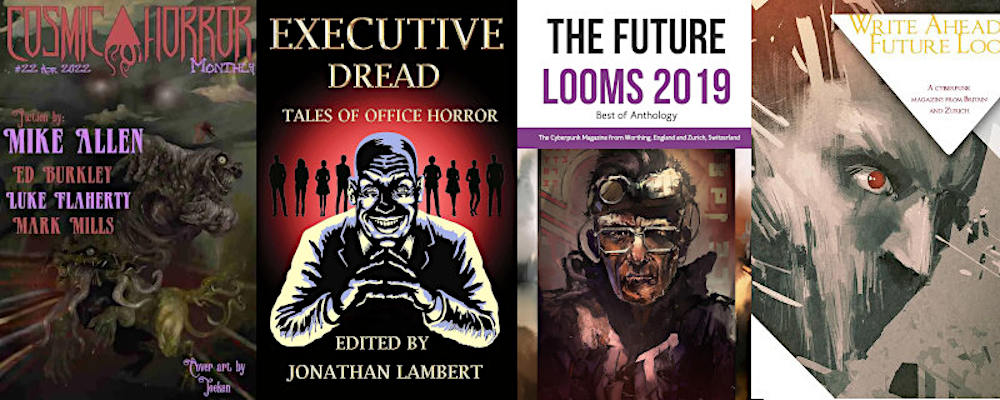

Alexander Hay's
Official Page - Fiction
I write short fiction — sci fi, horror and fantasy, amongst other things, and am presently writing my first novel.
In the meantime, here is a complete list of all my published stories and reprints.
Oh, and I also have an Amazon Author page. Please support the lovely publishers who have given my work a platform!
If you're interested in any of my work, or would like to discuss licensing or reprints, please e-mail me. Or you can use my contact form.
You can also follow me on Bluesky, Mastodon and Substack.
***
Reprints.
- (2024) "A Walk in the Garden", for Dragon Gems. Winter 2024 Edition LINK
- (2019) "The Proxy", for The Future Looms 2019 – Best of Anthology. LINK
***
First Editions
- (2024) "Molded", for Leading Edge Magazine. Issue 84 June 2024 LINK
- (2024) "The Secret of the Sorceress", in Feisty Felines and Other Fantastical Familiars. WordFire Press May 2024 LINK
- (2024) "Job Offer", for Utopia Science Fiction. April/May 2024 LINK
- (2024) "Mother Mantis", for Carnage House. #2 March 2024 LINK
- (2024) "1,000 Eyes", for the NoSleep Podcast. S20E14 January 2024 LINK
- (2023) "Megamaw" in Strange Machines: An Anthology of Dark User Manuals. Apex Book Company October 2023 LINK LINK
- (2023) "Recorded Delivery", for Weirdbook. #46 March 2023 LINK
- (2023) "The Equation's Cold", for the NoSleep Podcast. S19E03 February 2023 LINK
- (2023) "A Christmas Ghost Story", Self-Published. 24 December 2022 LINK
- (2022) "Cú Faoil", for Night Terror Novels/The Theatre Phantasmagoria. October 2022 LINK
- (2022) "A Walk in the Garden", for Savage Realms Monthly. August 2022 LINK
- (2022) "Patterns", for Timber Ghost Press, LLC. 14 July 2022 LINK
- (2022) "Scared Stiff", for the NoSleep Podcast. Suddenly Shocking Vol.12 June 2022 LINK PENDING
- (2022) "In For A Pound", in Grandpa's Deep-Space Diner. Jay Henge Publishing 20 April 2022 LINK

- (2022) "The Immortal Maurice Ball", for Twenty-two Twenty-eight. 8 April 2022 LINK
- (2022) "The Horrors Unseen", in Cosmic Horror Monthly. #22 April 2022 LINK
- (2021) "The Interview", in Executive Dread - Tales of Office Horror. Jolly Horror Press LINK
- (2021) "The Bleak Stars", for the NoSleep Podcast. S16E11 LINK
- (2020) "The Lady of Moths", for the NoSleep Podcast. Suddenly Shocking Vol.12 LINK PENDING
- (2020) "Turn Off the Taps", for the NoSleep Podcast. S14E24 LINK
- (2020) "An Arm and a Leg", for Write Ahead/The Future Looms. #7 LINK
- (2019) "The Proxy", for Write
Ahead/The Future Looms. #2 LINK
{kind=link}